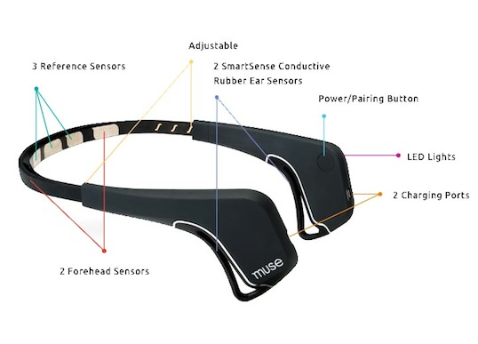

I want to create a wearable prototype of a neuro toy focusing on augmented sensing and/or augmented human-to-human communication, providing some feedbacks to the user on her emotions. The project should be developed in the perspective of a museum experimental installation in which visitors could testing and learning about their feelings and physiological reactions. The users perspective in participating in the museum experiment should be the “BYOB” (Bring Your Own Brain or Body).
The general framework could be then related to neurofeedback measurements of physiological activity such as brainwaves (using EEG) during a specific human enrollment and creating a set of feedbacks perceivable or only by the user or instead collectively perceivable (as visual or sound feedback).EEG Kiss gives an oustanding example of a potential use of an EEG headset connected to a visual feedback device for an artistic installation.
Focusing on neurofeedback means to target the wearable device on and headband and/or dataglove-like device (in case it would appear necessary adding other physiological measurements such as heart function, breathing, muscle activity, and skin temperature via EDG or ECG). In particular, I want to involve especially the ears as regions interested by the wearable device since our high sensibility in controlling and managing this area.
A potential start could be looking into the MUSE headband, which helps monitoring physiological activities on the brain and improve concentration, focus, and relaxation. I am not aiming to control anything with brainwaves, as MUSE does, but instead to detect specific user emotions and playfully work with them.

http://www.choosemuse.com/
http://www.fastcompany.com/3008499/tech-forecast/these-brain-scanning-neuro-toys-are-about-change-everything
I still need to understand what kind of feedback I want to provide to the user and what kind of emotion I want to detect and enhance but this point will become more clear while perusing and further developing the project.